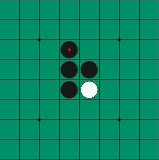
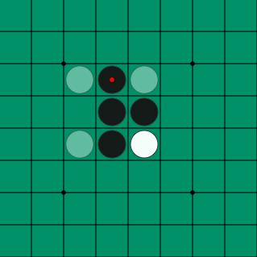

Instuctions
Othello is a two player strategy game so grab a friend. One player will be
placing black tokens while the other places white.
The goal of the game
is to have more of your tokens on the board when the game ends.
Whenever a token is placed it must be in a way that creates a
straight line with
a disc of the same color on the other end and discs of
your opponents color filling in the middle.
After placing the disc all of your opponents
discs in the line will be flipped to your color.
With the starting setup these are all of the possible black plays:

If black placed at the top-most option this is how the board will look after playing:
Following that, these are all of the possible white plays:

The players will take alternating turns until neither player has anywhere they can play.
At this time whoever has the most tokens of their color wins.
If one player can't place a token but the other player still could,
they must pass their turn to the other player before continuing on normally.